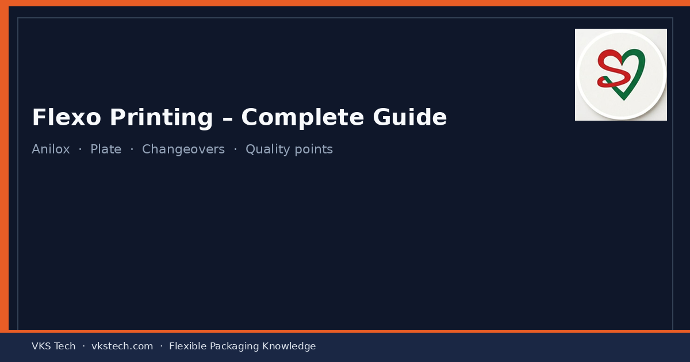
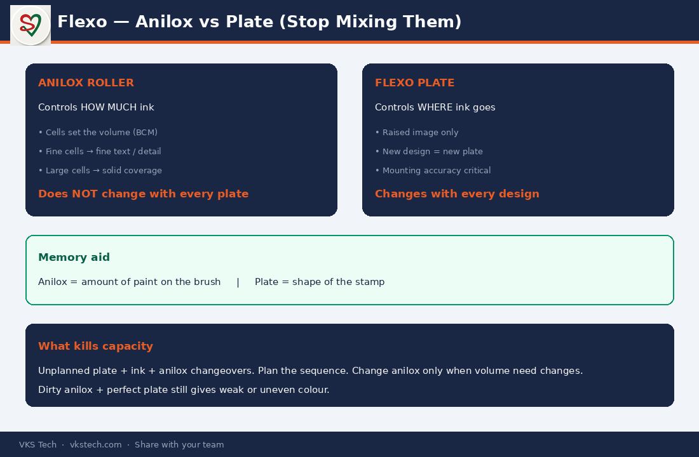

🎨 In Flexo, the Plate Decides WHERE the Ink Goes. The Anilox Decides HOW MUCH. Most Waste Comes from Mixing These Two Up.
📖 12-min read · Printing process · Anilox + Plate + PPC
Flexo is the dominant process in many modern converting plants because changeovers are faster and plate cost is lower than gravure cylinders. Yet a large share of colour variation and setup waste still comes from one confusion: treating the anilox as if it must change with every plate.
This guide separates the two roles clearly so supervisors and PPC can plan better and operators can troubleshoot faster.
- Speed range: 200–400+ m/min
- Plate: Flexible photopolymer (raised image)
- Anilox: Does not change with every new plate
- Biggest capacity killer: Unplanned plate + ink + anilox changeovers
1. How Flexo Works (Clear Sequence)
- Plate — Photopolymer plate with raised image areas (like a stamp).
- Anilox — Ceramic roller with millions of cells picks up a measured volume of ink. Doctor blade removes excess.
- Ink to plate — Anilox transfers ink only onto the raised parts of the plate.
- Plate to film — Raised inked surface presses against the moving film.
- Drying — Ink dries before the next colour station.
- Registration — Systems keep colours aligned across stations.

2. Anilox vs Plate — The Most Important Distinction
| Item | Controls | Changes with design? |
|---|---|---|
| Anilox | How much ink (volume) | No — only when volume need changes |
| Plate | Where the ink goes (image) | Yes — every new design |
Simple memory aid: Anilox = amount of paint on the brush. Plate = shape of the stamp.
Dirty or wrong-volume anilox produces weak or uneven colour even with a perfect plate. That is why anilox cleaning and correct cell volume selection are daily disciplines, not “once a month” tasks.
3. What PPC and Supervisors Must Watch
- Anilox readiness — correct volume for the job, clean cells
- Plate mounting accuracy — registration problems often start here
- Ink viscosity — density and drying both depend on it
- Changeover sequence — plate + ink + (only if needed) anilox — plan the time, do not discover it on the machine
Unplanned changeovers are one of the largest hidden capacity losses in converting plants. Later articles in this series show how roll length and changeover time turn into real MT capacity numbers.
Next → Registration & Colour Consistency (D50/D65, Delta E, and why small errors become expensive)
🎨 फ्लेक्सो में प्लेट तय करती है इंक कहाँ जाएगी। अनिलॉक्स तय करता है कितनी जाएगी। ज्यादातर वेस्टेज इन दोनों को मिलाने से होती है।
📖 12-मिनट पढ़ें · प्रिंटिंग प्रोसेस · अनिलॉक्स + प्लेट + PPC
फ्लेक्सो कई आधुनिक कन्वर्टिंग प्लांट में मुख्य प्रक्रिया है क्योंकि चेंजओवर तेज और प्लेट लागत सिलेंडर से कम होती है। फिर भी रंग भिन्नता और सेटअप वेस्टेज का बड़ा हिस्सा एक भ्रम से आता है: अनिलॉक्स को हर प्लेट के साथ बदलने योग्य समझना।
- स्पीड: 200–400+ m/min
- अनिलॉक्स: हर नई प्लेट के साथ नहीं बदलता
- सबसे बड़ा क्षमता चोर: अनप्लैन्ड प्लेट + इंक + अनिलॉक्स चेंजओवर
1. फ्लेक्सो कैसे काम करता है
- उभरी हुई प्लेट
- अनिलॉक्स मापी हुई इंक उठाता है
- इंक सिर्फ उभरे हिस्से पर जाती है
- प्लेट फिल्म पर दबाती है
- ड्राइंग और रजिस्ट्रेशन
2. अनिलॉक्स बनाम प्लेट — सबसे महत्वपूर्ण फर्क
अनिलॉक्स = कितनी इंक (वॉल्यूम)। प्लेट = कहाँ इंक जाएगी (इमेज)। अनिलॉक्स हर डिज़ाइन के साथ नहीं बदलता — तभी बदलें जब इंक वॉल्यूम की जरूरत बदले।
याद रखने वाली लाइन: अनिलॉक्स = ब्रश पर पेंट की मात्रा। प्लेट = स्टैम्प का आकार।
अगला → रजिस्ट्रेशन और रंग स्थिरता